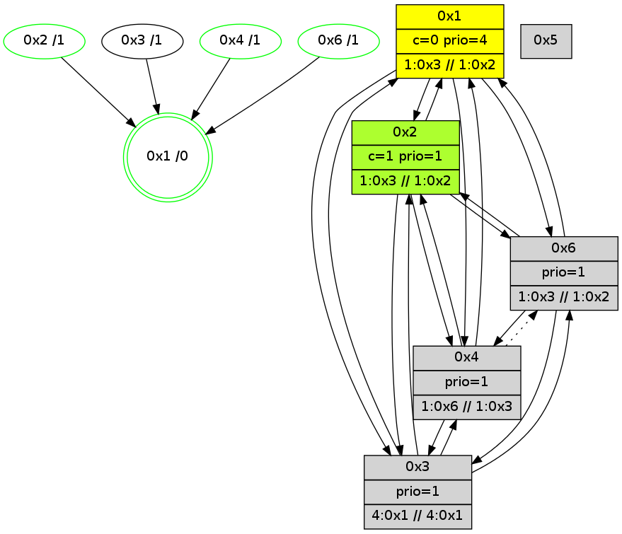

>> << IDX [start] -100 -25 -5 +0 +5 +25 +100 [805.238584995]
 Previous packets
----------------------------------------------------------------------
800.317503 beacon01(adaf) #0 coord=01,02,05,03,04,06 cycle=432.0ms assoc
-- color-indic=1 64 a5 2c
800.327463 beacon02(adaf) #0 coord=01,02,05,03,04,06 cycle=432.0ms assoc 64 f4 d3
800.337464 beacon05(adaf) #0 coord=01,02,05,03,04,06 cycle=432.0ms assoc 64 52 f9
800.347464 beacon03(adaf) #0 coord=01,02,05,03,04,06 cycle=432.0ms assoc 64 ce dd
800.357465 beacon04(adaf) #0 coord=01,02,05,03,04,06 cycle=432.0ms assoc 64 68 f7
800.367465 beacon06(adaf) #0 coord=01,02,05,03,04,06 cycle=432.0ms assoc 64 1c eb
800.379193 [Hello(3): seq=602 sym=2,1,6 asym=4 sysInfo=hasWarning stat=2:2,4,1,0/1:7,15,15,1/6:13,3,13,9/4:0,2,0,0]
800.381929 [Hello(4): seq=604 sym=2,1 asym=6,3 sysInfo=hasWarning,coloring-mode-on,ColoringModeIndicationCalled stat=2:2,4,1,0/1:10,14,4,1/6:14,1,9,10/3:0,0,0,0]
800.385133 [Color(4) seq=30 @0:0 prio=1 >4.@1,1.@2,1.@6 >>4.@1,1.@2,1.@3]
800.390134 [Hello(1): seq=503 sym=2,3,4,6 sysInfo=hasWarning,coloring-mode-on,ColoringModeRequestCalled stat=2:13,7,6,2/3:1,0,1,0/4:7,1,6,1/6:5,3,6,0]
----------------------------------------------------------------------
800.809610 beacon01(adaf) #0 coord=01,02,05,03,04,06 cycle=432.0ms assoc
-- color-indic=1 64 61 43
800.819571 beacon02(adaf) #0 coord=01,02,05,03,04,06 cycle=432.0ms assoc 64 30 bc
800.829571 beacon05(adaf) #0 coord=01,02,05,03,04,06 cycle=432.0ms assoc 64 96 96
800.839571 beacon03(adaf) #0 coord=01,02,05,03,04,06 cycle=432.0ms assoc 64 0a b2
800.849573 beacon04(adaf) #0 coord=01,02,05,03,04,06 cycle=432.0ms assoc 64 ac 98
800.859572 beacon06(adaf) #0 coord=01,02,05,03,04,06 cycle=432.0ms assoc 64 d8 84
800.871302 [Hello(5): seq=561]
800.873920 [Hello(2): seq=1094 sym=6,4,1,3 sysInfo=coloring-mode-on,ColoringModeIndicationCalled stat=6:5,2,7,3/4:2,3,0,0/1:11,14,3,1/3:0,0,1,0]
800.877053 [Color(2) seq=30 @0:0 prio=1 >4.@1,1.@3,1.@4,1.@6 >>4.@1,1.@2,1.@3]
800.882500 [Color(1) seq=31 @0:0 color=0 prio=4 >1.@2,1.@3,1.@6 >>1.@2,1.@3,1.@4]
----------------------------------------------------------------------
801.301718 beacon01(adaf) #0 coord=01,02,05,03,04,06 cycle=432.0ms assoc
-- color-indic=1 64 3f 22
801.311679 beacon02(adaf) #0 coord=01,02,05,03,04,06 cycle=432.0ms assoc 64 6e dd
801.321679 beacon05(adaf) #0 coord=01,02,05,03,04,06 cycle=432.0ms assoc 64 c8 f7
801.331679 beacon03(adaf) #0 coord=01,02,05,03,04,06 cycle=432.0ms assoc 64 54 d3
801.341679 beacon04(adaf) #0 coord=01,02,05,03,04,06 cycle=432.0ms assoc 64 f2 f9
801.351680 beacon06(adaf) #0 coord=01,02,05,03,04,06 cycle=432.0ms assoc 64 86 e5
801.363389 [Hello(3): seq=603 sym=2,4,1,6 sysInfo=hasWarning stat=2:3,5,1,0/4:1,3,0,0/1:8,0,15,1/6:13,3,13,9]
801.366061 [Hello(4): seq=605 sym=2,1,3 asym=6 sysInfo=hasWarning,coloring-mode-on,ColoringModeIndicationCalled stat=2:3,5,1,0/1:11,15,4,1/3:1,0,0,0/6:14,1,9,10]
801.369281 [Color(4) seq=31 @0:0 prio=1 >1.@2,1.@6 >>1.@2,1.@3,1.@4 c=0]
801.372839 [Hello(1): seq=504 sym=2,3,4,6 sysInfo=hasWarning,coloring-mode-on,ColoringModeRequestCalled stat=2:13,7,6,2/3:1,0,1,0/4:7,1,6,1/6:5,3,6,0]
801.376622 [STC(1) #0.66 new-neigh,tree-change,stable,to-color d=0]
----------------------------------------------------------------------
801.793827 beacon01(adaf) #0 coord=01,02,05,03,04,06 cycle=432.0ms assoc
-- color-indic=1 64 fb 4d
801.803789 beacon02(adaf) #0 coord=01,02,05,03,04,06 cycle=432.0ms assoc 64 aa b2
801.813788 beacon05(adaf) #0 coord=01,02,05,03,04,06 cycle=432.0ms assoc 64 0c 98
801.823789 beacon03(adaf) #0 coord=01,02,05,03,04,06 cycle=432.0ms assoc 64 90 bc
801.833788 beacon04(adaf) #0 coord=01,02,05,03,04,06 cycle=432.0ms assoc 64 36 96
801.843789 beacon06(adaf) #0 coord=01,02,05,03,04,06 cycle=432.0ms assoc 64 42 8a
801.855395 [STC(4)->1 #0.66 new-neigh,tree-change,stable,to-color d=1]
801.857488 [STC(6)->1 #0.66 new-neigh,tree-change,stable,to-color d=1]
801.859226 [STC(3)->1 #0.66 new-neigh,tree-change,inconsistent-stability,to-color d=1]
801.860498 [Color(1) seq=32 @0:0 color=0 prio=4 >1.@2,1.@3,1.@6 >>1.@2,1.@3,1.@4]
801.862447 [TreeStatus(3)-.->1 #0.66 new-neigh,tree-change,inconsistent-stability child=1]
801.865483 [Color(6) seq=31 @0:0 prio=1 >1.@2,1.@3 >>1.@2,1.@3,1.@4 c=0]
801.872999 [Hello(2): seq=1095 sym=6,4,1,3 sysInfo=coloring-mode-on,ColoringModeIndicationCalled stat=6:5,2,7,3/4:3,4,0,0/1:12,15,4,1/3:0,0,1,0]
801.875830 [STC(2)->1 #0.66 new-neigh,tree-change,stable,to-color d=1]
801.879701 [Color(2) seq=31 @0:0 color=1 prio=1 >1.@3,1.@4,1.@6 >>1.@2,1.@3,1.@6 c=0]
----------------------------------------------------------------------
802.285936 beacon01(adaf) #0 coord=01,02,05,03,04,06 cycle=432.0ms assoc
-- color-indic=1 64 b7 fd
802.295898 beacon02(adaf) #0 coord=01,02,05,03,04,06 cycle=432.0ms assoc 64 e6 02
802.305897 beacon05(adaf) #0 coord=01,02,05,03,04,06 cycle=432.0ms assoc 64 40 28
802.315898 beacon03(adaf) #0 coord=01,02,05,03,04,06 cycle=432.0ms assoc 64 dc 0c
802.325898 beacon04(adaf) #0 coord=01,02,05,03,04,06 cycle=432.0ms assoc 64 7a 26
802.335897 beacon06(adaf) #0 coord=01,02,05,03,04,06 cycle=432.0ms assoc 64 0e 3a
802.347602 [Hello(3): seq=604 sym=2,4,1,6 sysInfo=hasWarning stat=2:4,6,2,0/4:2,4,0,0/1:9,0,0,1/6:13,4,13,9]
802.350272 [Hello(4): seq=606 sym=2,1,3 asym=6 sysInfo=hasWarning,coloring-mode-on,ColoringModeIndicationCalled stat=2:4,6,2,0/1:12,0,5,1/3:2,0,1,1/6:14,2,10,10]
802.353492 [TreeStatus(4)-.->1 #0.66 new-neigh,tree-change,inconsistent-stability,stable child=1]
802.356607 [Color(4) seq=32 @0:0 prio=1 >1.@6 >>1.@3,1.@4,1.@6 c=0,1]
802.361733 [Hello(1): seq=505 sym=2,3,4,6 sysInfo=hasWarning,coloring-mode-on,ColoringModeRequestCalled stat=2:14,8,7,2/3:1,0,1,1/4:7,1,6,1/6:5,4,6,0]
----------------------------------------------------------------------
802.778044 beacon01(adaf) #0 coord=01,02,05,03,04,06 cycle=432.0ms assoc
-- color-indic=1 64 73 92
802.788007 beacon02(adaf) #0 coord=01,02,05,03,04,06 cycle=432.0ms assoc 64 22 6d
802.798006 beacon05(adaf) #0 coord=01,02,05,03,04,06 cycle=432.0ms assoc 64 84 47
802.808006 beacon03(adaf) #0 coord=01,02,05,03,04,06 cycle=432.0ms assoc 64 18 63
802.818006 beacon04(adaf) #0 coord=01,02,05,03,04,06 cycle=432.0ms assoc 64 be 49
802.828007 beacon06(adaf) #0 coord=01,02,05,03,04,06 cycle=432.0ms assoc 64 ca 55
802.839496 [Color(1) seq=33 @0:0 color=0 prio=4 >1.@3,1.@6 >>1.@2,1.@3,1.@4 c=1]
802.842128 [Hello(2): seq=1096 sym=6,4,1,3 sysInfo=coloring-mode-on,ColoringModeIndicationCalled stat=6:5,2,7,3/4:4,5,1,1/1:13,15,4,1/3:0,0,1,0]
802.844592 [Color(6) seq=32 @0:0 prio=1 >1.@3 >>1.@2,1.@3,1.@4 c=0,1]
802.847013 [TreeStatus(2)-.->1 #0.66 new-neigh,tree-change,inconsistent-stability,stable child=1]
802.849491 [Color(2) seq=32 @0:0 color=1 prio=1 >1.@3,1.@4,1.@6 >>1.@2,1.@3,1.@6 c=0]
----------------------------------------------------------------------
803.270152 beacon01(adaf) #0 coord=01,02,05,03,04,06 cycle=432.0ms assoc
-- color-indic=1 64 3e 95
803.280113 beacon02(adaf) #0 coord=01,02,05,03,04,06 cycle=432.0ms assoc 64 6f 6a
803.290113 beacon05(adaf) #0 coord=01,02,05,03,04,06 cycle=432.0ms assoc 64 c9 40
803.300114 beacon03(adaf) #0 coord=01,02,05,03,04,06 cycle=432.0ms assoc 64 55 64
803.310115 beacon04(adaf) #0 coord=01,02,05,03,04,06 cycle=432.0ms assoc 64 f3 4e
803.320116 beacon06(adaf) #0 coord=01,02,05,03,04,06 cycle=432.0ms assoc 64 87 52
803.331815 [Hello(3): seq=605 sym=2,4,1,6 sysInfo=hasWarning stat=2:4,7,2,1/4:3,5,0,1/1:10,1,0,1/6:13,5,13,10]
803.334018 [Hello(1): seq=506 sym=2,3,4,6 sysInfo=hasWarning,coloring-mode-on,ColoringModeRequestCalled stat=2:15,9,7,3/3:1,0,1,1/4:7,1,6,1/6:5,5,6,0]
803.337271 [Hello(6): seq=520 sym=3,4,1,2 sysInfo=hasWarning,coloring-mode-on,ColoringModeIndicationCalled stat=3:3,8,12,1/4:3,4,1,1/1:2,11,6,1/2:6,9,7,3]
803.339873 [Hello(4): seq=607 sym=2,1,3 asym=6 sysInfo=hasWarning,coloring-mode-on,ColoringModeIndicationCalled stat=2:4,7,2,1/1:13,1,5,1/3:3,0,1,1/6:14,3,10,11]
803.343087 [Color(4) seq=33 @0:0 prio=1 >1.@6 >>1.@3,1.@4,1.@6 c=0,1]
----------------------------------------------------------------------
803.762260 beacon01(adaf) #0 coord=01,02,05,03,04,06 cycle=432.0ms assoc
-- color-indic=1 64 fa fa
803.772222 beacon02(adaf) #0 coord=01,02,05,03,04,06 cycle=432.0ms assoc 64 ab 05
803.782221 beacon05(adaf) #0 coord=01,02,05,03,04,06 cycle=432.0ms assoc 64 0d 2f
803.792222 beacon03(adaf) #0 coord=01,02,05,03,04,06 cycle=432.0ms assoc 64 91 0b
803.802221 beacon04(adaf) #0 coord=01,02,05,03,04,06 cycle=432.0ms assoc 64 37 21
803.812221 beacon06(adaf) #0 coord=01,02,05,03,04,06 cycle=432.0ms assoc 64 43 3d
803.824588 [Color(6) seq=33 @0:0 prio=1 >1.@3 >>1.@2,1.@3,1.@4 c=0,1]
803.826551 [Hello(2): seq=1097 sym=6,4,1,3 sysInfo=coloring-mode-on,ColoringModeIndicationCalled stat=6:6,2,7,3/4:5,6,1,1/1:14,0,4,1/3:1,0,1,0]
803.829685 [Color(2) seq=33 @0:0 color=1 prio=1 >1.@3,1.@4,1.@6 >>1.@2,1.@3,1.@6 c=0]
803.835505 [STC(1) #0.67 new-neigh,tree-change,inconsistent-stability,stable,to-color d=0]
803.838086 [Color(1) seq=34 @0:0 color=0 prio=4 >1.@3,1.@6 >>1.@2,1.@3,1.@4 c=1]
----------------------------------------------------------------------
804.254369 beacon01(adaf) #0 coord=01,02,05,03,04,06 cycle=432.0ms assoc
-- color-indic=1 64 b6 4a
804.264330 beacon02(adaf) #0 coord=01,02,05,03,04,06 cycle=432.0ms assoc 64 e7 b5
804.274331 beacon05(adaf) #0 coord=01,02,05,03,04,06 cycle=432.0ms assoc 64 41 9f
804.284331 beacon03(adaf) #0 coord=01,02,05,03,04,06 cycle=432.0ms assoc 64 dd bb
804.294331 beacon04(adaf) #0 coord=01,02,05,03,04,06 cycle=432.0ms assoc 64 7b 91
804.304331 beacon06(adaf) #0 coord=01,02,05,03,04,06 cycle=432.0ms assoc 64 0f 8d
804.315225 [Hello(1): seq=507 sym=2,3,4,6 sysInfo=hasWarning,coloring-mode-on,ColoringModeRequestCalled stat=2:15,9,7,3/3:1,0,1,1/4:8,2,6,1/6:6,5,6,0]
804.317896 [Hello(4): seq=608 sym=2,1,3 asym=6 sysInfo=hasWarning,coloring-mode-on,ColoringModeIndicationCalled stat=2:5,8,2,1/1:13,2,6,1/3:4,0,1,1/6:14,3,10,11]
804.321053 [STC(3)->1 #0.67 new-neigh,tree-change,inconsistent-stability,to-color d=1]
804.322841 [STC(4)->1 #0.67 new-neigh,tree-change,inconsistent-stability,stable,to-color d=1]
804.324964 [STC(2)->1 #0.67 new-neigh,tree-change,inconsistent-stability,stable,to-color d=1]
804.326228 [Color(4) seq=34 @0:0 prio=1 >1.@6 >>1.@3,1.@4,1.@6 c=0,1]
----------------------------------------------------------------------
804.746478 beacon01(adaf) #0 coord=01,02,05,03,04,06 cycle=432.0ms assoc
-- color-indic=1 64 72 25
804.756438 beacon02(adaf) #0 coord=01,02,05,03,04,06 cycle=432.0ms assoc 64 23 da
804.766439 beacon05(adaf) #0 coord=01,02,05,03,04,06 cycle=432.0ms assoc 64 85 f0
804.776439 beacon03(adaf) #0 coord=01,02,05,03,04,06 cycle=432.0ms assoc 64 19 d4
804.786438 beacon04(adaf) #0 coord=01,02,05,03,04,06 cycle=432.0ms assoc 64 bf fe
804.796439 beacon06(adaf) #0 coord=01,02,05,03,04,06 cycle=432.0ms assoc 64 cb e2
804.808796 [Color(6) seq=34 @0:0 prio=1 >1.@3 >>1.@2,1.@3,1.@4 c=0,1]
804.810766 [Hello(2): seq=1098 sym=6,4,1,3 sysInfo=coloring-mode-on,ColoringModeIndicationCalled stat=6:6,2,7,3/4:5,7,1,1/1:14,1,5,1/3:1,0,1,0]
804.813899 [Color(2) seq=34 @0:0 color=1 prio=1 >1.@3,1.@4,1.@6 >>1.@2,1.@3,1.@6 c=0]
804.821035 [Color(1) seq=35 @0:0 color=0 prio=4 >1.@3,1.@6 >>1.@2,1.@3,1.@4 c=1]